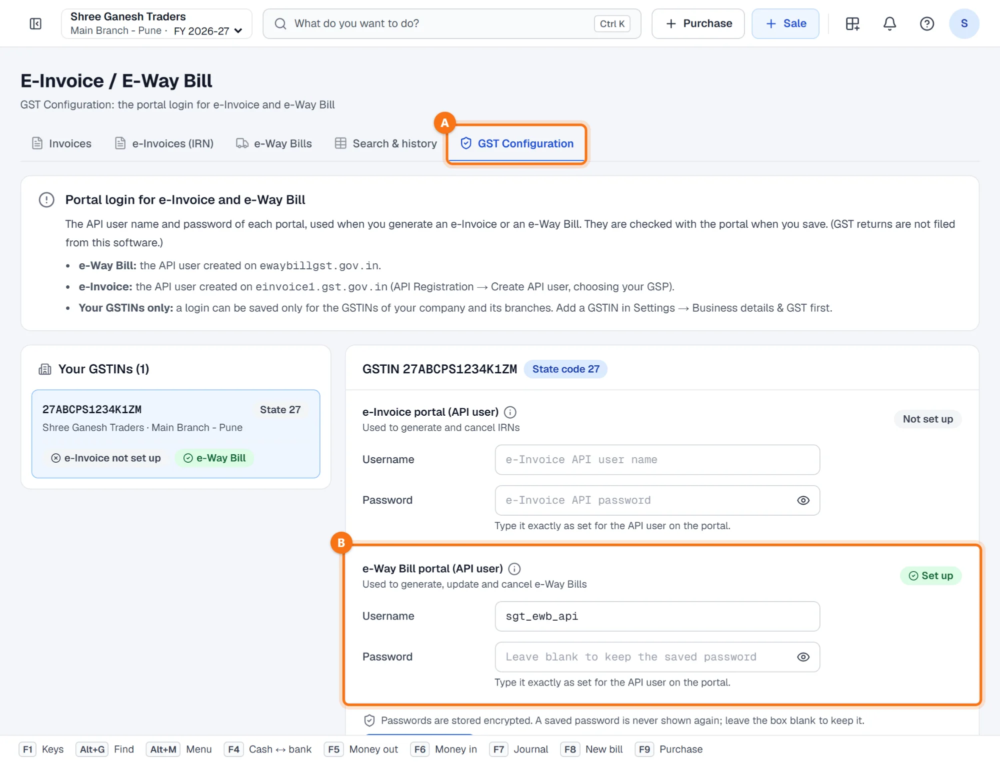
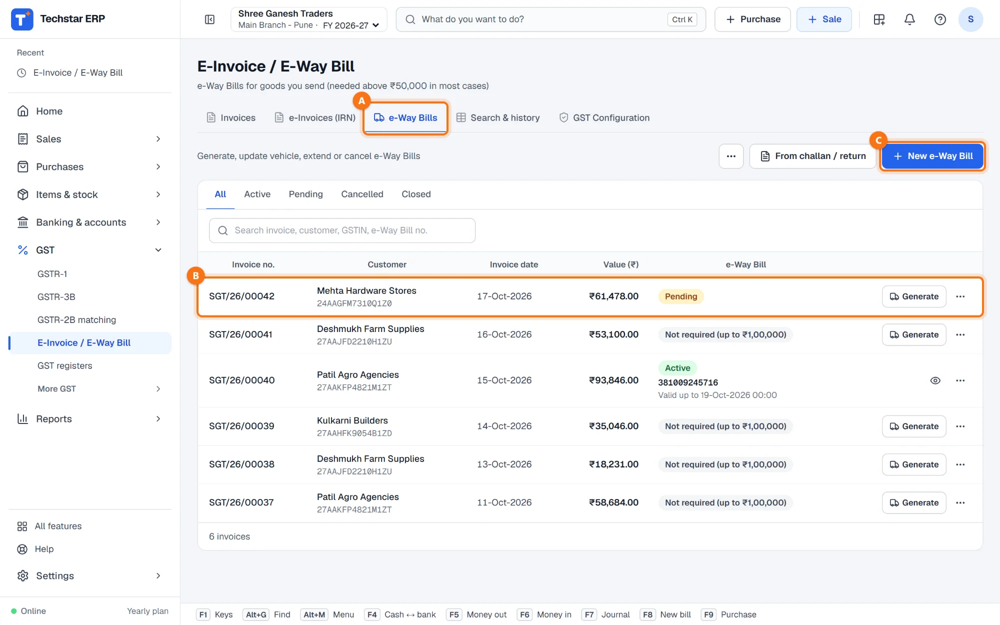
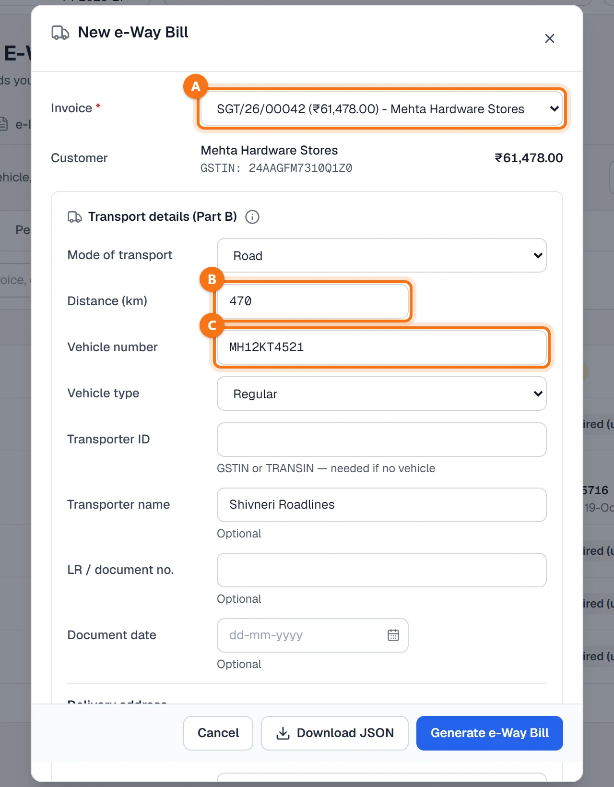
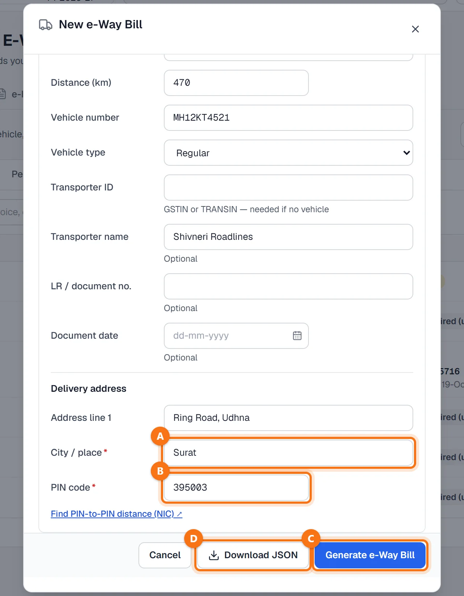
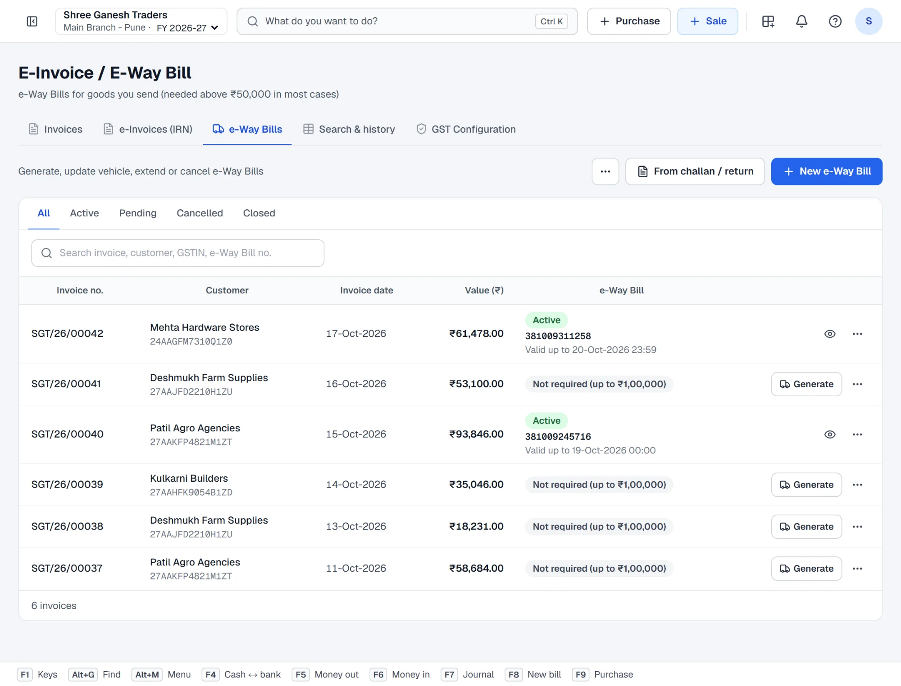
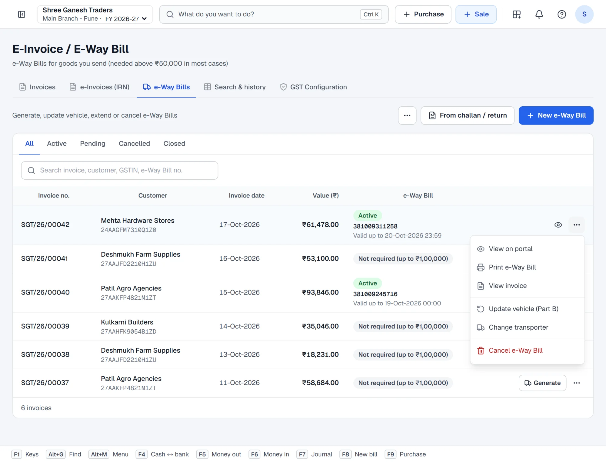

Techstar ERP is also in Hindi and Marathi. Click the round button with your initial (top right) → Language → हिन्दी or मराठी. The menu changes to that language; invoices and other legal documents print as usual. The screenshots in this guide use the English menu.
When is an e-Way Bill needed?
An e-Way Bill is needed before goods move when the consignment value is above the limit — ₹50,000 for movement between states. For movement within a state the limit depends on the state (for example ₹1,00,000 within Maharashtra).
You do not have to remember this: the e-Way Bills list marks each invoice Pending when a bill is needed, or Not required (up to ₹…) with the limit that applies to the states of that sale.
One-time setup: your e-Way Bill portal login
- On ewaybillgst.gov.in, create an API user for your GSTIN (Registration → For GSP, choosing your GSP).
- In Techstar ERP open GST → E-Invoice / E-Way Bill → GST Configuration A.
- Pick your GSTIN on the left, enter the e-Way Bill API user name and password B and save. The login is checked with the portal when you save, and passwords are stored encrypted.

No API user yet? You can still use the ERP: fill the same form and click Download JSON. Upload that file on the e-way bill portal and the bill is made there. (GST returns are not filed from this software.)
Open the e-Way Bills tab
Go to GST → E-Invoice / E-Way Bill and open the e-Way Bills tab A. Every sales invoice is listed with its customer, date, value and e-Way Bill status. Use the All / Active / Pending / Cancelled tabs or the search box to find an invoice.

Pick the invoice
Click Generate on the invoice's row B, or click + New e-Way Bill C and choose the invoice from the list. The customer, GSTIN and value of the invoice are shown so you can check you have the right one.
Enter the transport details (Part B)
| Field | What to enter |
|---|---|
| Mode of transport | Road, Rail, Air or Ship. |
| Distance (km) | The approximate distance. Leave it blank to let the portal calculate it from the PIN codes (there is a link to NIC's PIN-to-PIN distance). |
| Vehicle number | By road: the vehicle number, for example MH12KT4521 — or give the transporter ID instead. |
| Vehicle type | Regular, or Over dimensional cargo. |
| Transporter ID | The transporter's GSTIN or TRANSIN. Needed when there is no vehicle number yet. |
| Transporter name, LR no. | Optional. By rail, air or ship the transport document number and date are required. |
| Delivery address | Filled from the invoice's ship-to address. City and PIN code are required. |

Generate
Check the delivery City / place A and PIN code B, then click Generate e-Way Bill C. The ERP sends the invoice and transport details to the e-way bill portal and records the e-Way Bill number and its validity on the invoice. Download JSON D makes the upload file for the portal instead.

The e-Way Bill is active
The invoice now shows Active, the 12-digit e-Way Bill number and Valid up to. The portal sets the validity from the distance — for normal cargo about one day for every 200 km.

Print, change the vehicle, extend or cancel
Click the ⋯ button on the row:
- Print e-Way Bill — give the print to the driver; View on portal shows the portal's record.
- Update vehicle (Part B) — the goods moved to another vehicle (breakdown, transhipment); choose the reason.
- Change transporter — hand the bill to another transporter.
- Extend validity — appears from 8 hours before to 8 hours after the bill expires, when the goods cannot reach in time.
- Cancel e-Way Bill — only within 24 hours of generating it and before the goods are checked in transit. A cancelled bill cannot be used again; generate a new one.

Other ways to generate an e-Way Bill
- Right after saving the invoice — when the goods are above the limit, the saved invoice shows a yellow reminder with a Generate E-Way Bill link. If you use e-invoicing, generate the IRN in the window that opens; the same window then asks for the transport details and makes the e-Way Bill. See How to make a sales invoice.
- From challan / return — for delivery challans, sale returns and purchase returns: type the document number, fetch it and generate.
- Trip sheet (combine bills) — in the ⋯ menu at the top: one consolidated e-Way Bill for several bills on one vehicle.
- Bills where I am the transporter — e-Way Bills that others have assigned to your GSTIN.
Common questions
The list says “Not required”. Can I still make an e-Way Bill?
I get an error about the login or credentials.
Is the vehicle number required?
I made a mistake in the e-Way Bill.
Does the e-Way Bill change my accounts?
More guides
Screenshots are from Techstar ERP with a demo company (Shree Ganesh Traders, Pune). All names, GSTINs, amounts and document numbers are sample data.